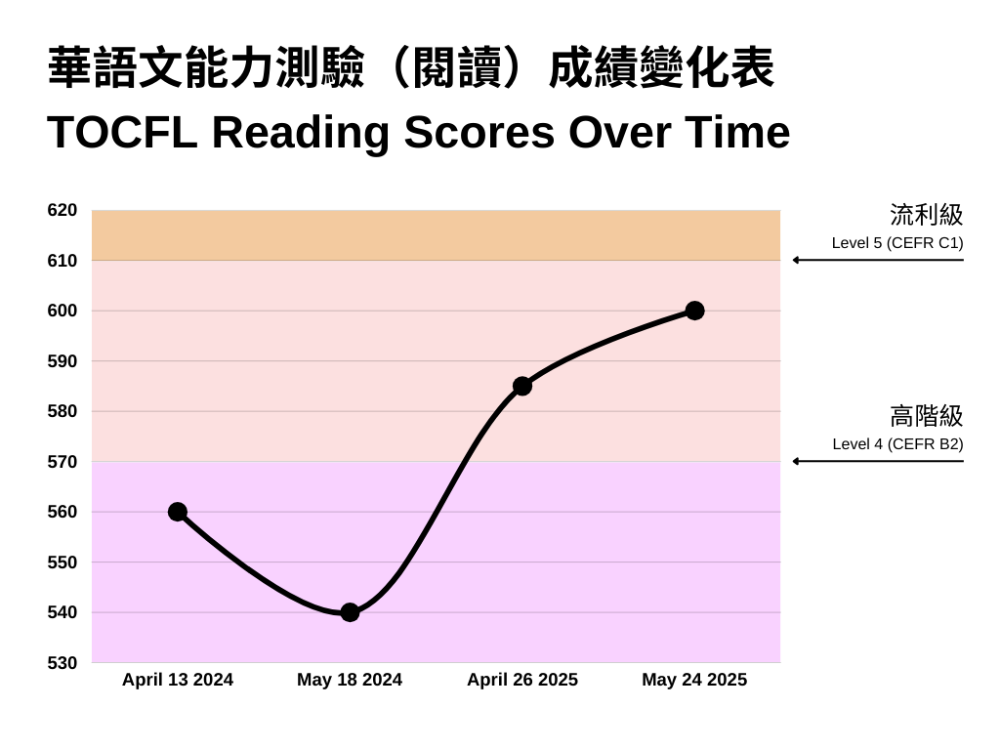
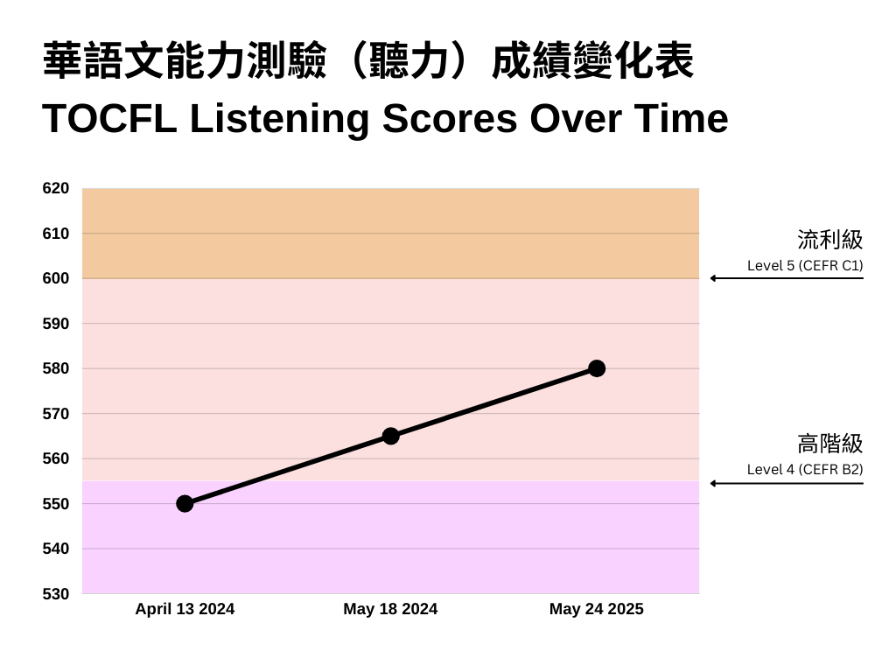

Elliott Jones
Technical Writer


Over a decade in Taiwan and mainland China. Near-native level Mandarin Chinese fluency. Have worked for the British government in Shanghai and for many of Taiwan’s top hardware and software companies.
My Best TOCFL Score Yet
Posted June 20, 2025 by Elliott Jones
Last month I took the TOCFL (Test of Chinese as a Foreign Language) Listening & Reading exam for the fourth time. Unlike my previous attempt, there were no malfunctions in the exam software this time.
I didn't quite get Level 5 (CEFR C1), my goal, but I was very close, and it was my best score to date.
Preparation
In the run up to my previous exam, I had completed the “A Course in Contemporary Chinese Volume 5” textbook, and in the run up to the exam this time, I completed the “A Course in Contemporary Chinese Volume 6” textbook, and also done many of the TOCFL Band C mock questions. All of the new words introduced to me in both books and the mock questions were added to a new Anki deck, and drilled.
Results
I got 600/700 for reading (beating my previous best of 585/700), and 580/700 for listening (beating my previous best of 565/700). Overall, this was only a Level 4 (CEFR B2), but I was still very pleased when the results popped up on the screen because for two exams in a row now, I have seen an improvement in my reading score, and if you don’t include the previous malfunctioned listening section, my listening score has increased two exams in a row too. Below is a visualization of all my previous results for both sections.
{kind=link}

{kind=link}

Certificate and Score Report
Today I received my certificate and score report in the mail, nothing new since I already had a Level 4 certificate, but still nice to have a new “high score” shown on the score report.


Liked This Article?
Read My Last Article
I Passed TOCFL Reading Level 4 (Chinese CEFR B2)
Last month I took the TOCFL (Test of Chinese as a Foreign Language) Listening & Reading exam once again. Going into it for the third time, but the first time in 11 months, I was feeling very confident, having boosted my reading ability by reading every "A Course in Contemporary Chinese 5" (當代中文5) article in the month prior to the exam, and doing thousands of Anki reviews to learn all of the new vocabulary.